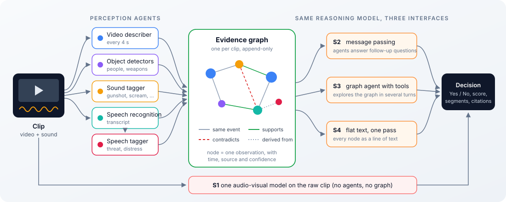

In short
Systems that flag violent video for a human operator can be built from language models without training: perception models describe what they see and hear, and a language model decides. We keep the perception agents and the reasoning model fixed and change only how the observations reach the decision: messages between agents, a typed evidence graph explored with tools, or flat text read in one pass. A single audio-visual model on the raw clip is the reference point, and two annotators record which evidence (sight, sound or speech) they relied on.
How the systems are built

Explore one evidence graph
This is the real graph of the worked example in the paper: a -second clip from a film, labelled shooting. Each node is one observation by one agent; edges were added by rules. Hover or tap a node to read it, and pick a system below to see which nodes it cited.
What each system answered on this clip
Results on the XD-Violence test set
F1 of the Yes/No decision on clips, with 95% bootstrap intervals. Flat text (S4) matches the single audio-visual model (S1); the graph agent (S3) and message passing (S2) are less accurate.
Robustness
The same comparison with reworded system prompts and with a larger reasoning model (Qwen3.6-35B-A3B instead of Gemma 4 12B). The ordering of S3 and S4 holds; the larger model weakens message passing.
Main findings
Data and code
Human evidence reference
Decisions, incident segments and the modality each annotator relied on (visual, sound, speech), for XD-Violence test clips. Annotations only, no video. CC BY-NC 4.0, access on request.
huggingface.co/datasets/amine0110/xd-violence-review →Code
Evidence graph schema and store, the perception agents, the edge builder, the four systems, the evaluation and the frozen results behind every number in the paper. MIT licence.
github.com/amine0110/evidence-graph-agents →The XD-Violence videos are not redistributed; obtain them from the official XD-Violence page under its terms.
Citation
@misc{mokhtari2026violentvideo,
title = {What Helps Language-Model Agents Review Violent Video?
A Controlled Comparison with a Human Evidence Reference},
author = {Mokhtari, Mohammed El Amine and Mancas, Matei and Vandenbulcke, Virginie},
year = {2026},
note = {Preprint, University of Mons}
}